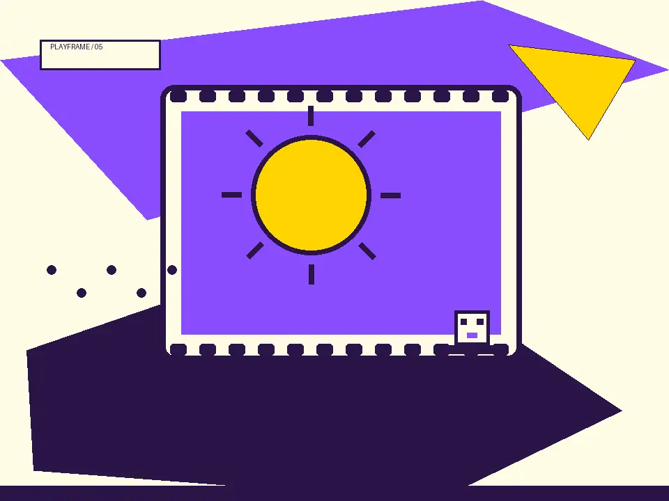
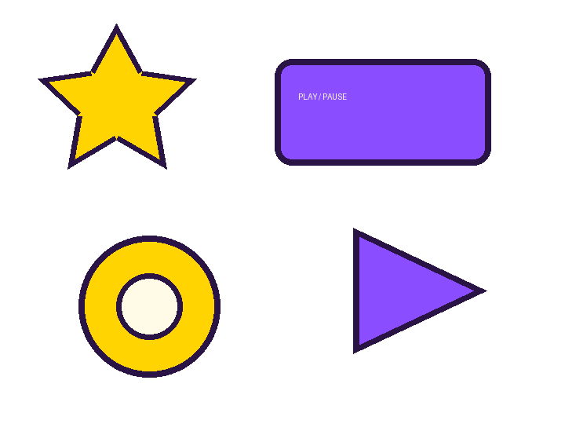

LEVEL 02 / PROGRAMM
Dein Wochenende
in Bewegung.
Zwei Festivaltage, sechs Programmpunkte und genug Raum für spontane Entdeckungen. Alle Filme laufen in Originalsprache mit deutschen Untertiteln, sofern nicht anders angekündigt.
Der Ablauf / Version 1.0
Wähle dein nächstes Level.
Einlass jeweils 30 Minuten vor Beginn.
| Zeit | Programmpunkt | Was dich erwartet | Ort |
|---|---|---|---|
| Spawn point: Ankommen | Einchecken, Festivalplan schnappen und die offenen Spielstationen ausprobieren. | Foyer | |
| Kurzfilm-Quest I | Animation und fantastische Level: fünf kurze Filme über das Abtauchen in andere Welten. | Saal | |
| Behind the pixels | Filmschaffende erzählen, wie aus Skizzen, Sounds und kleinen Teams große Gefühle werden. | Studio | |
| Kurzfilm-Quest II | Dokumentarische und fiktionale Geschichten rund um Identität, Community und Spielkultur. | Saal | |
| Continue? – Kurzfilm-Quest III | Ein neuer Filmblock über Entscheidungen, zweite Chancen und alternative Enden. | Saal | |
| Credits & Community | Gemeinsamer Abschluss, offene Fragen und Empfehlungen für die nächste Film- oder Game-Session. | Studio |
Die Reihenfolge der Filme wird vor Ort angekündigt. Wir planen Pausen zwischen den Blöcken, damit du den Raum wechseln, dich austauschen oder einfach kurz durchatmen kannst.
Kein Speedrun nötig
Dein Tempo zählt.
Du musst nicht jeden Programmpunkt schaffen, um dazuzugehören. Mit einem Tagesticket kannst du dein eigenes Festival-Level bauen. Die Filmblöcke sind unabhängig voneinander kuratiert und funktionieren auch, wenn du erst später dazukommst.
Die Spielstationen im Foyer sind während der Öffnungszeiten frei zugänglich. Sie zeigen kleine, lokale und experimentelle Spiele, die du direkt ausprobieren kannst. Wenn gerade jemand spielt, frag gern, ob du nach der Runde übernehmen darfst.
Ticket passend auswählen

Good to know
Filme schauen. Fragen stellen. Weiterspielen.
Das Festival richtet sich an Gamer:innen, aber du brauchst weder Vorwissen noch einen eigenen Controller. Neugier reicht völlig.